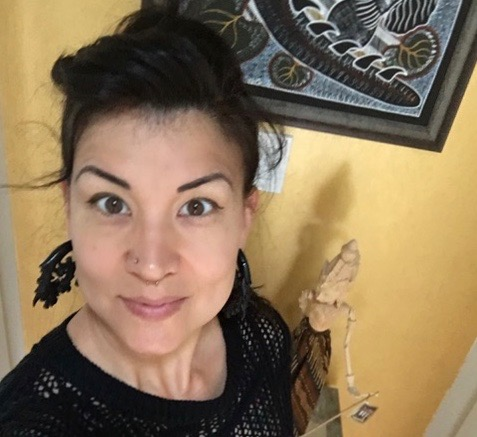

About Me
I am an aspiring coder who hopes to one day be able to make wonderful things easily on the world wide web. I am excited to explore all the angles of being a developer to see what I enjoy the most. Perhaps there is even an aspect for which I have a natural propensity. That would be really great! However if not, I am not afraid to work really hard until I am good at something.
My favorite thing at home, other than my husband, are my dogs. I love my dogs! But I love dogs so much, I am not afraid to love anyone's dogs. Big ones, little ones, fluffy ones, smooth ones, I love them all. I have two dogs at home. Tuxedo is my boy dog and Mirka is my girl dog. Mirka is ten years old and Tux is barely three. They are very silly and make me laugh every day.
Connect With Me